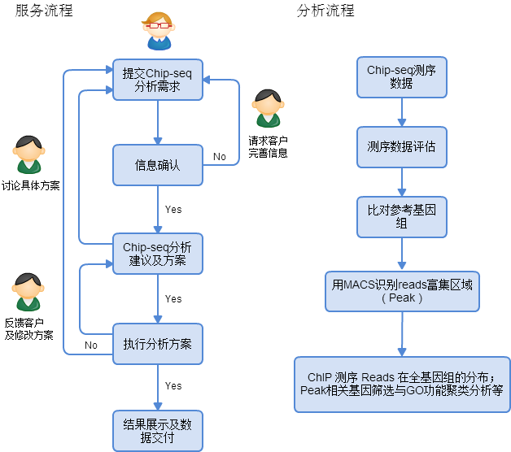

Chip-seq数据分析
染色质免疫共沉淀（ChIP）是在体内环境中研究蛋白质与DNA相互作用的经典实验方法，广泛应用于组蛋白修饰、特定转录因子的基因调控作用等相关领域。随着新一代测序技术的发展和成熟，染色质免疫沉淀实验与高通量测序的整合——Chromatin Immunoprecipitation Sequencing （ChIP Sequencing），可在全基因组范围对蛋白结合位点进行高效而准确的筛选与鉴定，同时也为研究的深入开展打下基础。
服务及分析流程

Chip-seq数据整理
- 数据所属样品信息：C2C12细胞系、老鼠肝组织等；
- 样品设计：对照比较策略；
- 测序平台：Solexa, Illumina 2000, Life science 454 FLX, MiSeq 等；
- 数据分析目的：生物学假设，基因寻找等；
- 其它信息，提供详尽的信息有利分析员给出合理有价值的建议。
参考文献：
- Wang, Jie, et al. "Sequence features and chromatin structure around the genomic regions bound by 119 human transcription factors." Genome research 22.9 (2012): 1798-1812.
- Heintzman, Nathaniel D., et al. "Histone modifications at human enhancers reflect global cell-type-specific gene expression." Nature 459.7243 (2009): 108-112.
- Zhang, Yong, et al. "Model-based analysis of ChIP-Seq (MACS)." Genome Biol 9.9 (2008): R137.
- Valouev, Anton, et al. "Genome-wide analysis of transcription factor binding sites based on ChIP-Seq data." Nature methods 5.9 (2008): 829-834.
周易数据团队所收集的数据集均来自开源公共生物信息数据库。
所有研究材料和技术数据的交流，周易数据团队会严格遵守保密协议，不会向任何第三方透露相关信息。
欢迎客户来电咨询，如有分析需求，请整理Chip-seq数据信息并发送至zyxdata@163.com，我们会尽快回复客户。
注意：测序原始数据，将会在信息确认后，通过其它方法上传。